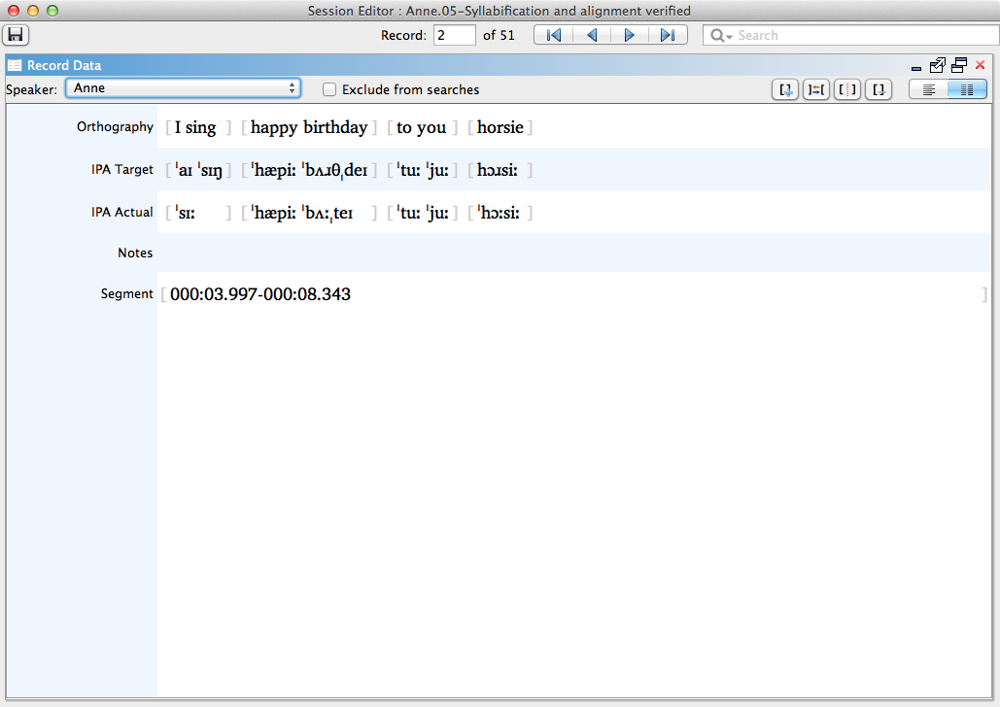
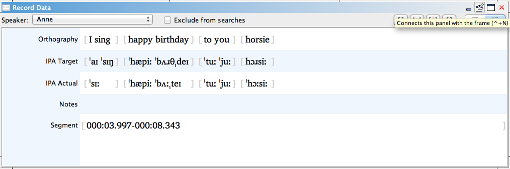
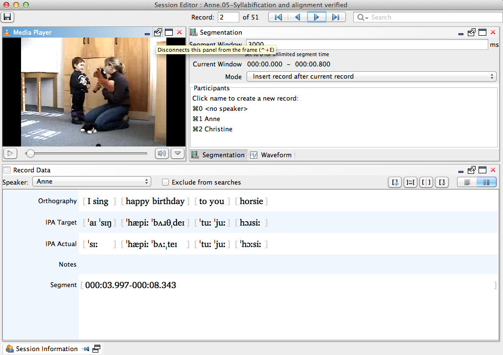

Views
Information in each session is displayed in a series of small windows within the Session Editor, called views. There are several types of views:
- Views with access/reference to the entire session:
- Session Information
- Tier Management
- Views with information relating to individual records:
- Record Data
- Syllabification & Alignment
- IPA Validation
- Views with media functions:
- Media Player
- Speech Analysis (formally Waveform)
- Segmentation
- Views that allow you to search for text within a session:
- Find & Replace
- Utility views which help with IPA transcription:
- IPA Lookup
To open a view, select it from the View menu. Functions for open views are available both within the views themselves, and in the View menu. To close a view, click the Close/X in the top right corner of that viewor choose the menu selection.
Not all views must be open at any given time, and views may be moved around within the Session Editor or "undocked" as their own separate window.
Views retain their currently defined size and position each time you exit Phon.
General View Actions
The following actions are available to all editor views.
Maximize View
Maximize a view within the Session Editor window.
-
Click the maximize button near the top right corner of the view you wish to maximize, or when the view is focused, press CTRL+M.
If the view was docked, it will expand to fill the Session Editor window. If the view was undocked, it will expand to fill your computer screen.

-
To restore the view to its previous size, click the restore button near the top right corner (this button looks like two windows), or press CTRL+N when the view is in focus.
The view will return to its previous unmaximized position.
Minimize View
Minimize a view within the Session Editor window.
-
Click the minimize/_ button near the top right corner of the view.
A small title bar for that view will appear at an edge of the Session Editor.
-
To make a minimized view temporarily reappear, click on its name or icon.
When the focus is changed to another view (i.e. another view is selected), the view will return to its minimized position.Note: To make the view retain its opened position when focus is lost, click the thumbtack button near the top right corner of the title bar. To deactivate this option, click the thumbtack again. -
To restore the minimized view to a normal position within the Session Editor frame, click the restore button near the top right corner (this button looks like two windows), or press CTRL+N when the view is in focus.
The view will return to its previous docked position in the Session Editor, even if it was undocked when you minimized it.
Relocate View
Move a view to a new position within the Session Editor.
-
Click on the view's title bar and drag it to the desired location within the Session Editor window.
As you drag the view, the Session Editor will show the alternate position of that view. When it appears as you wish, release the mouse button.
-
Two or more views may occupy the same location in the Session Editor. To do so, drag and drop one view to the title bar of the other view.
You can switch between views in the same position by selecting the appropriate tab at the bottom of either view.
Dock View
Return an undocked view to the Session Editor window.
-
In the top right corner of the view, click the button that looks like a window with an inward arrow (on mouseover it will say Connects this panel with the frame). Alternately, select the title bar of the view and press CTRL+N.The view will reappear in the Session Editor window in its previous docked position.
Note: You may also click and drag the view's title bar to return it to the Session Editor window in a different position.
Undock View
Disconnect or "undock" a view from the Session Editor, making it its own separate window.
-
In the top right corner of the view, click the button that looks like a window with an outward arrow (on mouseover it will say Disconnects this panel from the frame). Alternately, select the title bar of the view and press CTRL+E.The view will appear as a separate window in front of the Session Editor.
 -
To move the view while it is undocked, click and drag on the small bar centred above the title bar. To resize the view, click and drag on any other edge or corner.
The view will retain its undocked size and position when you exit and reopen Phon.